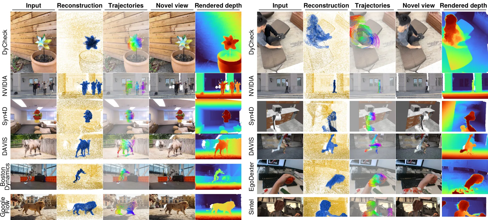
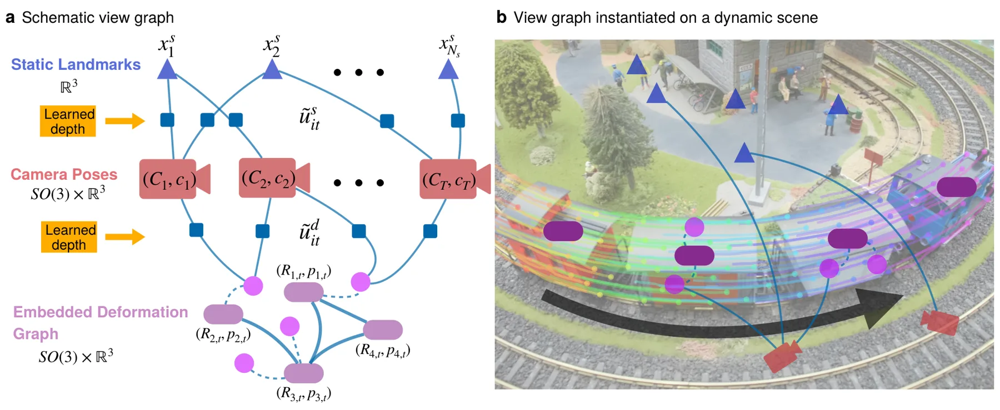
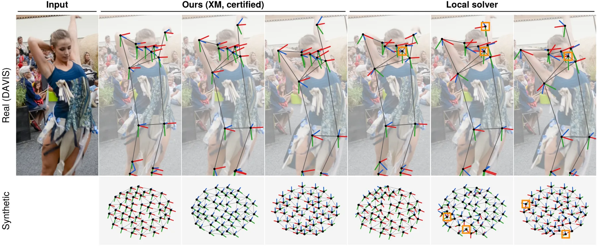
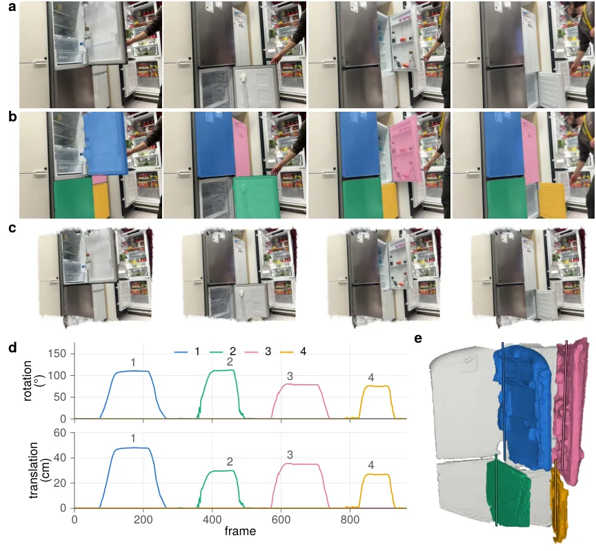

XM4D：把 4D 重建拆成两级可验证全局最优的几何优化
XM4D: 4D Reconstruction through Certifiable Geometric Optimization
方法链条是：DA3 单目深度 + TAPNext 点跟踪 + SAM3 动态掩码 → 逐帧深度尺度校正的 scaled BA（QCQP→SDP→BM 求解）→ XM2 两次求解夹一轮外点过滤，再用 Ceres 做重投影精化 → 固定 rest frame 的 EDG 分段求解 → 动态 3DGS 光度优化。核心改动是用均匀球约束 Σs_t²=T 替代首帧锚定，并把 EDG 目标写成固定 rest frame 下的二次型，从而消去平移后只剩旋转 QCQP。七个基准上全部求解均获证书（表 6 中 n_ok 等于全部场景数，中位相对次优间隙 η 多在 1e-12 量级），Replica ATE-T 0.002、Sintel 0.018，明显低于 COLMAP（0.009 / 0.359）与 MoSca（0.060 / 0.067）；DyCheck 全流程 96 s，对 MoSca 的 942 s 快约一个数量级，2000 帧序列 3322.4 s 完成。
ATE-T on Replica
ATE-T on Sintel
certified EDG solves
runtime on DyCheck
作者、单位与技术谱系 · Research context
作者与单位
研究脉络
- XM（会议版，同一团队）团队前作关系：提出深度辅助的 scaled BA 与 BM/黎曼求解器，本篇沿用该框架并新增均匀球约束、扩到动态 EDG。[论文 §2.3 与 §3.4]
- SE-Sync（Rosen et al., 2019）上游工作关系：提供 SDP 松弛 + Burer–Monteiro + 黎曼阶梯求解位姿同步的范式，本文把它扩到带逐帧深度尺度的 BA。[论文 §3.3 与参考文献 [60]]
- MoSca（2024）对比基线关系：用 EDG 式 motion scaffold 做 4D 重建，但以帧间相对变换建模，目标非二次；本篇改为固定 rest frame 才获得可验证性。[论文 §4.1]
合作网络
- Harvard Computational Robotics GroupHeng Yang → Harvard Computational Robotics Group关系：课题组主页与项目托管[XM4D 项目页]
- Harvard–UC Berkeley 合作Harvard University → UC Berkeley关系：论文共同署名[论文作者与单位]
- XM → XM4D 项目延续XM（会议版） → XM4D关系：同一团队的前作与后续版本[论文 §1 贡献列表]
作者与单位来自 arXiv TeX 源；脉络中的“团队前作/上游工作”基于论文自述与参考文献，属于有来源的解读；未发现公开材料说明作者之间的师生关系，故不写入。
方法本质拆解 · What actually changed
不训练新网络，换的是求解器
没有新的可学习主干：深度用 Depth Anything 3、跟踪用 TAPNext、动态掩码用 SAM 3，全部冻结使用，只在需要时给 SAM3 文本或关键点提示。静态/动态两级都是几何优化，光度阶段才用 3DGS 拟合外观，且高斯只做渲染不参与位姿。因此增益不能归因于“更大模型”，而是来自问题重写与证书验证。
约束加在尺度与形变参数化上
静态级新增逐帧尺度 s_t 与均匀球约束 Σs_t²=T（实现为只约束迹最大的 ρT 帧、ρ=0.9），并用逐帧权重归一化平衡各帧影响；动态级把 EDG 节点变换写成相对固定 rest frame 的形式，使跟踪、ARAP、时间平滑三项对旋转都是二次的。约束作用在尺度与旋转变量上，不引入新的传感器先验，也不需要重力或 IMU。
推理是两级求解加一次光度拟合
推理时先做深度/掩码/跟踪预处理，再跑静态 QCQP-SDP-BM 求解，中间插一轮外点过滤并重复一次（XM2），随后 Ceres 以二维重投影精化；动态级按段解 EDG，最后用恢复的几何初始化动态高斯做光度优化。没有学习式后端、没有测试时微调，全部是确定性的数值优化，因此同一输入可复现。
用消元把耦合问题变成可验证的旋转同步
深度抬升把二维轨迹变成带噪声的三维观测，消去平移与路标后，原本的 BA 只剩旋转与尺度；SDP 松弛在这个结构上足够紧，BM 分解让大规模求解可行，证书则直接告诉你松弛是否取到秩三解。静态与动态分离切断了形变误差向位姿传播的路径，所以 MoSca 那类“形变错→轨迹错”的失败在这里不会出现；它没有做的是联合估计 EDG 结构与蒙皮权重，也没有把深度不确定性显式建模进目标。
输入 = 单目视频/图像集 + 预训练深度与点跟踪；改变的位置 = 把 BA 重写为带逐帧尺度的旋转-only QCQP、把 EDG 目标二次化；约束/动作 = 均匀球尺度约束 + SDP/BM 求解 + 外点过滤与 Ceres 精化；直接效果 = 解可验证且 Replica/Sintel ATE 降到 0.002/0.018 m。

结论与问题Conclusion & Motivation
核心结论
把 4D 重建拆成“相机运动”和“非刚性形变”两级，每一级都能写成只含旋转的 QCQP，并用 SDP 松弛加 Burer–Monteiro 求解器给出全局最优证书，这是本文最实质的贡献。表 6 显示在 Sintel、TUM、Replica、BAL、IMC、DyCheck、NVIDIA、Syn4D 上所有静态解都通过证书（n_ok 等于场景数），中位相对次优间隙多数在 1e-12 量级，动态 EDG 的 700/700、511/511、800/800 次分段解也全部通过。精度上 Replica 的 ATE-T 为 0.002（COLMAP 0.009、MegaSAM 0.067、MoSca 0.060），Sintel 为 0.018（MegaSAM 0.049、COLMAP 0.359）；代价是在无序图像集 IMC 上 0.047，明显不如专用 SfM 的 COLMAP 0.003。
动机与问题
现有 4D 方法把位姿、几何、形变、外观放在一个非凸目标里联合优化，强耦合使结果对初始化敏感，容易落进局部极小；论文图 3 直接给出 EDG 局部优化收敛到错误形变的例子，并引用 XM 会议版图 10 说明静态重建也有同类失败。第二个问题是单目深度逐帧尺度漂移：XM 会议版把首帧尺度锚定为 s_1=1，等于让整个重建迁就第一帧的深度误差。第三个问题是长序列带来的碎片化轨迹、噪声深度与动态点观测不完整，这些都会让“局部最优”看起来像“模型能力不足”，因此作者要问的是能否用可验证的全局优化同时解决精度与可信度。
方法Method
方法总览
静态级把二维轨迹按预测深度抬成三维观测，引入逐帧尺度 s_t 与置信权重 ω_it，最小化同一路标在多帧上的三维一致性；把平移与路标解析消去后得到 scaled-rotation-only QCQP，再松弛为 SDP，用 BM 分解加黎曼阶梯求解。动态级在固定 rest frame 下建立 EDG，跟踪项、ARAP 项与时间平滑项对节点变换都是二次的，消去节点平移后同样化为旋转 QCQP，并按段求解以控制规模。工程上静态级跑两遍 XM2 并在中间插一轮外点过滤，再用 Ceres 以二维重投影误差热启动精化；动态几何随后初始化动态高斯泼溅，只做外观与光照的光度细化。
关键技术细节
尺度约束是本文相对会议版的关键修改：要求 Σ_t s_t² = T 的均匀球约束，既固定全局尺度又不偏袒任何一帧；实际实现用混合流形版本，只把对角块迹最大的 ⌈ρT⌉ 帧放到球面上（默认 ρ=0.9），其余帧尺度自由，避免模糊帧把全局尺度带偏。求解器沿用 XM/SE-Sync 的验证规则：当 Z(y_r) 半正定、解秩为三且各块行列式为正时判定证书成立，否则用附录的迹限制界报告次优间隙。权重上默认采用逐帧归一化 ω_it/w_t（表 1 配置 6），在 12 行指标中有 8 行取得最好或次好。预处理固定为 DA3 深度与内参、SAM3 文本或关键点提示掩码、TAPNext 在线点跟踪（新查询点离已有轨迹超过阈值才采样）。

实验Experiments
实验设置
相机精度在七个基准上评：IMC、Replica、TUM、Sintel 只评位姿，Syn4D（由 Replica 与 RoboCasa 组装的合成基准）、NVIDIA、DyCheck 还跑 EDG 与光度重建；求解器配置研究另加 BAL 的三个问题。指标是 ATE-T、RPE-T、RPE-R，估计中心先用 TEASER++ 做相似变换对齐真值，平移误差按真值中心到质心的平均距离 d 归一化（分母 d+1）。对照包括 COLMAP、VGGT、MegaSAM（DROID-SLAM 的动态视频改版）、MoSca、Shape of Motion，渲染再对比 T-NeRF、NSFF、Nerfies、HyperNeRF、DyBluRF、Gaussian Marbles 等；硬件是 64 核 Threadripper PRO 7985WX、256 GB 内存、两张 RTX 6000 Ada，所有方法单卡运行。
实验数字与比较
表 2 的相机精度：Replica 上 XM4D 的 ATE-T 0.002、RPE-T 0.002，COLMAP 为 0.009/0.012、MegaSAM 0.067/0.087；Sintel 上 0.018/0.026，MegaSAM 0.049/0.058、VGGT 0.066/0.095；IMC 上 0.047/0.074，COLMAP 0.003/0.005。表 3 的运行时间：DyCheck 端到端 96 s（预处理 78 s、求解 18 s），MoSca 942 s、COLMAP 843 s；Replica 求解器 14.6 s，MoSca 165.9 s；序列长度到 N=2000 时 3322.4 s（约 55 min），而 VGGT 在 N=200 显存溢出、MoSca 超过 N=500 失败、COLMAP 在 N=800 后超过一小时。表 4 的渲染：DyCheck mPSNR 19.51 / mSSIM 0.725 / mLPIPS 0.163，均优于给定真值位姿的 MoSca（18.91/0.677/0.284）；NVIDIA PSNR 27.01 对 MoSca 26.54；Syn4D mPSNR 21.73 对 MoSca 19.49。表 7 的 Syn4D 几何：动态物体 Chamfer 距离均值 7.4（×1e-3），MoSca 65.6、Shape of Motion 385.4。
消融/失败边界
表 1 用八种求解器配置做消融：把默认配置（第 6 列，ρ=0.9 加逐帧权重归一化）换回原版 XM（第 8 列，原始权重），TUM(Ceres) 的 ATE-T 从 5.72 升到 11.42、RPE-T 从 8.02 升到 16.23，Sintel 的 RPE-R 从 52 升到 121，说明球约束与权重归一化确实是主要增益来源。但配置 4（ρ=0.9、原始权重）在 Sintel 上 ATE-T 为 51，反而优于默认的 56，说明该配置并非每行最优，作者也承认它只在 8/12 行最好或次好。失败边界很清楚：无序图像集 IMC 上 COLMAP 的 0.003 远好于 0.047；Syn4D 上 MegaSAM 0.001 优于 0.002，NVIDIA 0.024 优于 0.038，DyCheck 0.005 优于 0.008；这些差距集中在有强时序连续性的视频流上，说明专用动态 SLAM 先验仍占优势。另一个边界是证书只对“给定深度与轨迹输入”的优化成立，输入被过滤后残留的系统误差仍会让证书解偏离真值。
局限与迁移Limitations & Transfer
局限与待核验
作者明确写了三条限制：证书覆盖的是优化而不是输入，单目深度与点跟踪的误差会偏置这个“已证明最优”的解；求解器稠密存储数据矩阵，内存随帧数二次增长，利用稀疏性是后续工作；EDG 结构与蒙皮权重在求解前固定，联合估计图结构与运动尚未做。我们还要核验几点：表 6 的证书通过率依赖 12.2 节的轨迹/深度过滤阈值，换数据分布后阈值是否需要重调，正文没有扫描；Syn4D 是自建合成基准（Replica + RoboCasa），其 Chamfer 对齐用每场景一个全局尺度，和真实采集的误差结构不同；动态级是逐段求解，段与段之间如何保证时间一致，正文只给流程没给定量误差；渲染对比里大多数基线给了真值位姿，而 XM4D 自己估位姿，这个比较有利但需要在同一估计位姿下再核验一次。
与你研究路线的关系
最可直接迁移的是“旋转-only QCQP + 均匀球约束”这套写法：我们做多相机/多会话 BA 时，深度或激光尺度逐帧漂移的问题同样存在，用 Σs²=T 的球约束替代固定首帧，可以在不引入额外标定的情况下稳定全局尺度，并把是否解对变成可检查的证书。第二个模块是 XM2 式“两次求解夹外点过滤 + Ceres 重投影精化”，它把可验证解当作鲁棒初值，正好对应我们在退化场景里“先求全局骨架、再局部精化”的习惯。第三步实验可以拿我们现有车载/校园序列，把视觉轨迹抬成三维观测后跑这套求解器，记录证书通过率、ATE 与 Ceres 基线的差异，并人为注入 10–30% 外点看证书何时失效；这比只看平均 ATE 更能说明该方法在真实退化数据上的可信边界。



